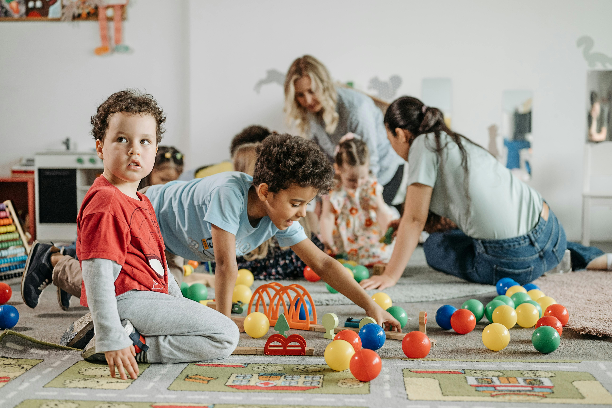
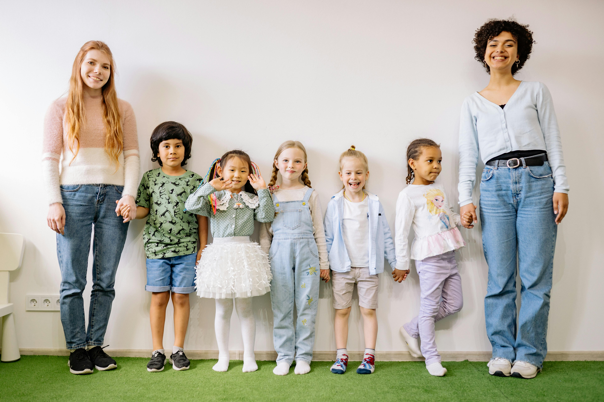
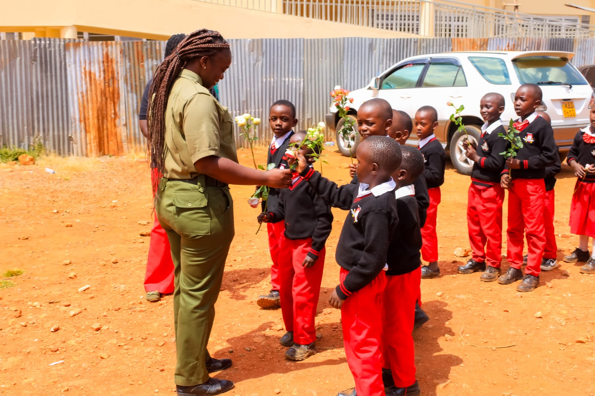
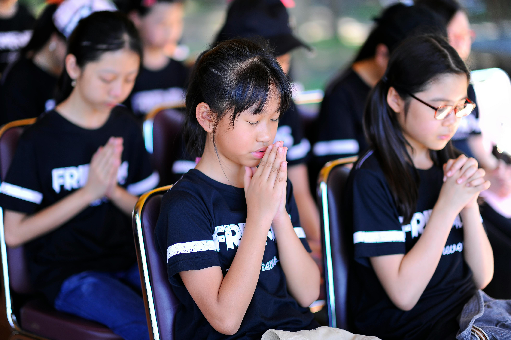

We are located In Uasin Gishu along The Eldoret Iten Road opposite Ndovu Plaza
At Jawabu School we combine Montessori principles with Competency-Based Education (CBE) to nurture confident, creative and independent learners.
Our commitment to excellence is reflected in our holistic approach to education,
nurturing young minds to thrive academically, socially, and personally.
The 8.4.4
curriculum provides a solid foundation with a rigorous academic structure, while
the CBE empowers students with essential life skills, critical thinking, and creativity.
Jawabu School is a beacon of excellence in early childhood education. We offer the Montessori Learning method, delivering a child-centered experience that goes beyond textbooks to inspire independence and a lifelong love for discovery. Our prepared environment is designed to nurture the unique potential of every young mind, empowering students to lead their own journey of growth and exploration."
Learn moreJawabu School is a beacon of excellence in holistic education. We offer the Competency-Based Education (CBE) system, delivering a practical, skills-focused experience that goes beyond textbooks to nurture the unique gifts of every learner. Our curriculum is designed to empower students with real-world mastery, shaping them into the visionary leaders of tomorrow.
Learn moreWe are committed to nurturing a culture of academic excellence by providing quality education that inspires curiosity and critical thinking. Our learners are guided to achieve their full potential through engaging lessons, continuous assessment, and personalized support. We strive to build a strong academic foundation that prepares every child for future success.
Learn more
We believe that every child has unique talents that deserve to be discovered and developed. Through a variety of sports and creative activities, we encourage teamwork, discipline, and self-confidence. Our programs provide learners with opportunities to showcase their abilities and grow both physically and socially.
Learn more
In today’s digital world, we equip our learners with essential technological skills to thrive in a modern society. Through hands-on computer lessons and guided use of digital tools, students learn how to research, create, and communicate effectively. We prepare them to be responsible and confident users of technology.
Learn more
We instill values of compassion, responsibility, and service by actively engaging learners in community outreach programs. Through acts of kindness and service, students learn the importance of giving back and making a positive impact. We nurture socially responsible individuals who care about their communities.
Learn more
We promote spiritual growth by nurturing values such as respect, integrity, and kindness. Through regular reflections, guidance, and faith-based activities, learners develop a strong moral foundation. We aim to support the holistic development of each child by fostering inner peace and character.
Learn moreWe promote spiritual growth by nurturing values such as respect, integrity, and kindness. Through regular reflections, guidance, and faith-based activities, learners develop a strong moral foundation. We aim to support the holistic development of each child by fostering inner peace and character.
Learn more